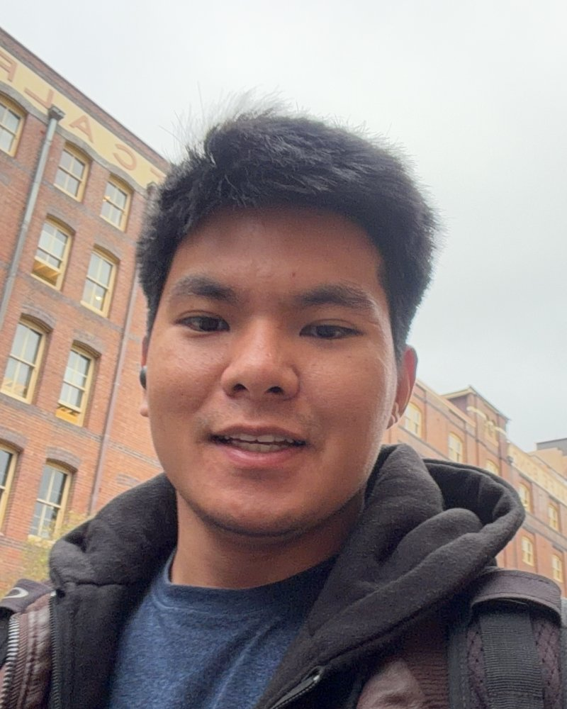

IT & POS
support
Hardware, software and connectivity troubleshooting in live, high-pressure venues. Root cause analysis, vendor coordination and incident resolution within SLA.

IT Support Coordinator, Merivale, Sydney
I support the network and 450+ POS terminals at Allianz Stadium and the SCG on event days, and I build Python and SQL projects that turn real data into clear answers.
On event days at Allianz Stadium and the SCG, every minute a till is down is revenue lost. My job is to make sure that does not happen: pre-event health checks, software rollouts, and fast on-site fixes for frozen screens, printers and connectivity.
I joined Merivale behind the bar in 2024 and moved into the IT support team in 2026 after helping troubleshoot POS and network issues on the floor. That path taught me something a ticket queue cannot: how the people using the systems actually work.
Service, from both sides of the bar.
Live venues, the networks behind them and the data they produce. Each one feeds the others.
Hardware, software and connectivity troubleshooting in live, high-pressure venues. Root cause analysis, vendor coordination and incident resolution within SLA.
TCP/IP, subnetting with VLSM, routing, DHCP and DNS. Designed a multi-site enterprise network in Cisco Packet Tracer and keep stadium connectivity up on match day.
Python, pandas and SQL for analysis, Streamlit for dashboards, Java and OOP fundamentals. Projects shipped with tests, CI and clear documentation.
Built, tested and open on GitHub. Keep scrolling to move through them.
World Cup 2026 forecasting engine: Dixon-Coles ratings, a talent prior and 50,000 Monte Carlo runs over a SQLite layer. Backtested on 2022. Streamlit app with pytest and CI.
Python, pandas, SciPy, SQL, Streamlit HackathonMicrosoft x Premier LeagueFootball Intelligence Engine, Live. Explainable, verifiable match intelligence from synthetic football events, with a multi-agent pipeline on Microsoft Foundry and Azure. Built in a team of two; I built the engine.
Python, Azure, Microsoft Foundry HackathonMeta Global AIA human-reviewed Meta AI workflow for social-media leads and client operations at Taropeuta, built for the Meta Global AI Developer Hackathon.
Meta AI, automation Data analyticsA data analytics system for youth football academies: automated Looker Studio dashboards, player PDF reports and a talent-ranking algorithm.
Python, Looker Studio Applied AIA drink-pairing assistant for bar staff. A Streamlit app that uses cosine-similarity flavour matching to suggest signature cocktails.
Python, Streamlit Sports data2024 to 2026From relegation candidate to national champion: a data analysis of Corinthians across the 2024 to 2026 seasons.
Python, pandas Web app2026A Pokédex for wine: photograph the bottle, rate it, add tasting notes and compare your score with everyone else's. Mobile-first PWA with a shared database, photo storage and e-mail login.
JavaScript, PWA, Supabase (PostgreSQL) Networking2026Multi-site design in Cisco Packet Tracer: 5-router backbone, 10 VLSM-addressed LANs, dynamic routing, DHCP, DNS and internal web services.
Cisco, VLSM, routing, DHCP / DNSA PHP and MySQL bookstore, a Welsh-word synthwave game, a daily learning card game and more.
From a match day
The venue Wi-Fi went down mid-game, outside our control. At half-time I switched the POS terminals to offline mode so sales kept going.
Then I called in a technician from the network provider. Keeping service running first and fixing the cause second is how I approach every incident.
Four countries before IT. Factories, building sites, shops and a lot of bars. This is what each stop taught me.
My first job, at 17. Selling to real customers taught me to listen first and recommend second.
Office work inside Shopping Aricanduva, Latin America's largest shopping centre by leasable area.
I started an engineering degree, then paused it to go abroad.
My first job in Japan. This is where I learned lean production, the Toyota way, on a real assembly line.
Hands-on building work: setting posts in the ground, mounting the frames, fitting the panels and connecting them to the box that generates the power.
My first job in Ireland, while I studied English.
Where my story behind the bar started.
A busy Irish pub, where I really built my bar skills.
I learned a new cuisine and its drinks, including mocktails.
Where everything above comes together: calm service, fixing problems at the source, and keeping things running when it matters.
Taught me a lot about storage, stock control and logistics.
Network and POS support at Allianz Stadium and the SCG. Pre-event checks, rollouts, on-site repairs and incident resolution within SLA.
Networking, systems analysis and design, Java and OOP, data structures.
Training for the Sydney Marathon in 2027.
Corinthians, for life. In Brazil the club's fans are called the Fiel, the faithful, and I am one of them.
Jazz and MPB, Brazilian popular music.
Open to IT Support, Network Support and entry-level Data and Tech roles in Sydney. Email is the fastest way to reach me.